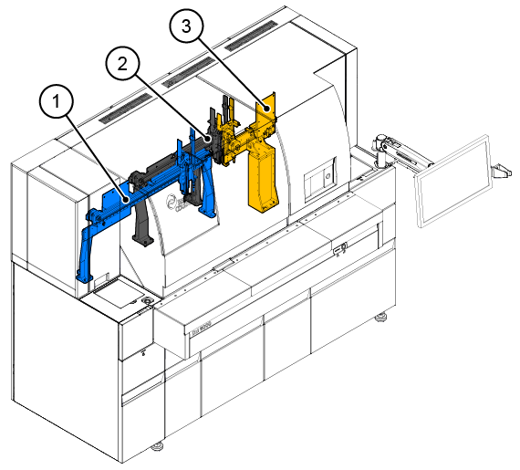
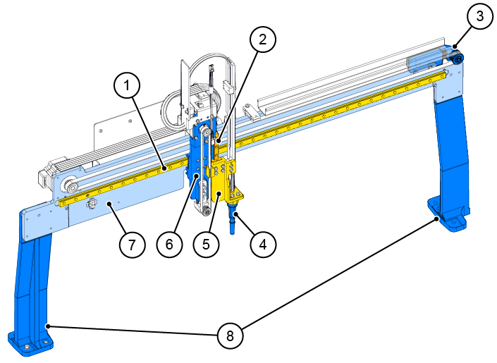

Operating Principles for the Pick-and-Place (PnP) Assemblies
This topic includes information about the theory of operation, or operating principles, for the pick-and-place (PnP) assemblies.
Function
- The sample PnP assembly transfers vessels between the sample wheel, supply shuttle, solid waste, and reagent shuttles.
- The incubator PnP assembly transfers vessels between the reagent shuttles, solid waste and incubator wheel.
- The anatlyical PnP assembly transfers vessels between the incubator wheel, luminometer and wash wheel.
Location
The PnP modules are located at the rear of the instrument.

| 1 | Sample pick-and-place |
| 2 | Incubator pick-and-place |
| 3 | Analytical pick-and-place |
Operational Overview
| PnP Assembly | Movement |
|---|---|
| Sample PnP |
|
| Incubator PnP |
|
| Analytical PnP |
|
Major Differences from the DxI 800/600
The pick-and-place (PnP) system design for the DxI 9000 differs from the DxI 800/600 in the following ways.
| Difference | Description |
|---|---|
| Motor | All pick and places X motors and Z motors have encoders mounted directly on them to determine the positions or locations of the devices. |
| Drive Motion |
Two-step pickup to mitigate splashing The PnP collet, when above the vessel at the Z-middle location and with no vessel present, will move down in the Z-direction to pick up a vessel. It will move down at processing speeds and halt just above the vessel top (11.52mm above the vessel alignment). It will then change speeds to either the engagement speed or the slow vessel engagement speed and then move down to the vessel pickup location. The slow vessel engagement speed is used for all incubator PnP two-step pickups, as well as several analytical PnP two-step pickups. Critical Timing Allocated times for X and Z PnP moves to maintain 8-second pitch. |
| Collet |
The pick and place collet design is different and cannot be interchanged with the DxI 800/600. The collet seal and eject rod are separated into two pieces. The eject rod is free for fall and will indicate if a reaction vessel (RV) has fallen out of the collet prematurely in transit to its destination. The collet has a straight bore.
|
Component Locations and Functions
All three PnP assemblies and their components are very similar.

| 1 | X Axis Linear Rail |
| 2 | Z Axis Linear Rail |
| 3 | X Axis Tensioner |
| 4 | Collet |
| 5 | Z Axis Carriage Assembly |
| 6 | X Axis Carriage Assembly |
| 7 | Crossbar |
| 8 | Supports |
| Component | Description and Function |
|---|---|
| Belt (X- and Z-axis) | Two belts of different lengths that both interface with an idler pulley and motor to drive the X and Z carriage motion. |
| X Carriage Assembly | The whole X-carriage moves back and forth on the X-axis on the X-linear rail. Attached to the X-linear rail is the Z-carriage. Combined, this assembly moves in the X and Z directions to allow for the successful pickup, placement, and transfer of vessels. |
| Idler Pulley Assembly (Z- and X-Axis) | The pulleys around which the motion belts are routed. They are adjustable and are used to tension the belt. They use springs and an automatic tensioner design to apply the correct tension without manual adjustment. |
| Motor, X-Axis | Provides power to move the X-carriage horizontally. |
| Motor, Z-Axis | Provides power to move the Z-carriage vertically. |
| Home Sensor (X- and Z-Axis) | Located on the X-axis and Z-axis of each PnP, these sensors detect when the PnP has reached the home position. |
| Hall Effect Sensor | Sensor used to detect PnP presence using the magnet in the eject rod. |
| Linear Rails | X and Z linear rails allow for horizontal and vertical motion. Carriages attach to truck/trolley |
| Collet | Uses six fingers to pick up vessels. Inside the bore of the PnP is the eject rod and puck, which are used for ejecting vessels and vessel detection. |
| Flex Cable | White five cores (splits from two cores then joins three more cores to form five cores), which move with the PnP carriage and are responsible for supplying power to motors and for reading sensor information. |
| Collet and Split Ejector | The split ejector design has an ejector rod and puck, two separate parts. The puck contains seals and the ejector contains the magnet. Splitting up these two parts allows the collet and hall effect to sense when the collet loses a vessel or fails to pick it up. |
Component and Interaction Block Diagrams
Interacting and Intersecting Devices
The PnP assemblies interact and intersect with the following devices.
| PnP Assembly | Interacting and Intersecting Devices |
|---|---|
| Sample PnP |
|
| Incubator PnP |
|
| Analytical PnP |
|